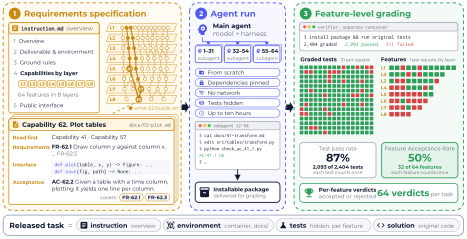

Coding agents now work for hours on a single task, and benchmarks have moved from fixing an issue to building whole repositories. A production library is harder again. Its requirements no longer fit in one document, and its features build on one another. One verdict on the whole task says little about how much of the library works. NL2Repo-Pro tests agents on this harder job. Among benchmarks that build production-scale repositories from scratch, we found none whose main score counts features accepted by the original tests.
Coding agents building whole libraries
NL2Repo-Pro.
Can a frontier agent build a real library from a spec?
NL2Repo-Pro gives an agent a layered specification and asks it to build a library from scratch, offline and without seeing the tests. Tests from the original repository then grade the result feature by feature.
▶ Watch the videoSee the results
- 150
- tasks
- 5
- languages
- 14
- project types
- 74K
- lines in the median library
The result
- 61.7
- Claude Opus 5.5 in Claude Code
- 47.1
- GPT-6.1 Sol in Codex
- 37.7
- DeepSeek V4.1 Flash in Claude Code
- 22.5
- Grok 4.7 in Claude Code
Feature Acceptance Rate on 150 tasks, the share of a library's features whose tests all pass. We call it the feature score.

01 / The problem
From fixing an issue
to building a library.
| Benchmark | Task | Lines per task | Score unit | Tasks | Languages |
|---|---|---|---|---|---|
| SWE-bench | Fix an issue | 33 (mean) | Task | 2,294 | 1 |
| SWE-Bench Pro | Fix an issue | 107 (mean) | Task | 1,865 | 4 |
| NL2Repo-Bench | Build a repository | 1.5K to 4K | Tests | 104 | 1 |
| MirrorCode | Rebuild a program | 5.9K | Task | 25 | 6 |
| E2E-SWE | Build a repository | 7.4K | Task | 186 | 11 |
| NL2Repo-Pro | Build a repository | 74K | Feature | 150 | 5 |
02 / The benchmark
A task is
a whole library.
NL2Repo-Pro has 150 tasks in Python, Go, Rust, Java and JavaScript, drawn from real repositories such as pocketbase, sqlglot, trimesh and freqtrade. Each task's specification splits the library into features and orders them by dependency. The agent gets up to ten hours, no network and no view of the tests.
We check every task before release. The original code passes every graded test, while an empty workspace and a version with empty function bodies score zero. The specification gives the interface the tests call directly and lists the other names they use. Engineers who work in the task's language review each task.
Frontier agents do not finish these libraries yet. Claude Opus 5.5 uses a median of 2.8 million output tokens and gets every feature accepted on 7 of 150 tasks. With one run per task, none of the other three systems does so on any task.
| Graded features | 44 |
| Dependency layers | 9 |
| Specification tokens | 180K |
| Graded tests | 750 |
| Lines in the original library | 74K |
| Source files in the original library | 230 |
- 16.3M
- lines of source
- 49,235
- source files
- 10,235
- graded features
- 204,101
- graded tests
Type
- Scientific computing2013%
- Web & networking1611%
- Documents & data formats149%
- Agent frameworks & infrastructure139%
- Coding agents & tooling139%
- Databases & data management117%
- Finance & blockchain107%
- Developer tools & compilers107%
- Security96%
- IoT, embedded & robotics85%
- Graphics, media & desktop85%
- Cloud & infrastructure75%
- Machine learning64%
- Research & productivity agents53%
Lines of source per task
Language
Repository created
03 / The results
Feature scores show
what is left to build.
7 / 150Best result: tasks with every feature accepted.
One failing test rejects a feature, so the feature score shows how much of each library is done. It also tells apart strong systems that test pass rates blur: on the 32 tasks where Claude Opus 5.5 and GPT-6.1 Sol both pass at least 95% of the graded tests, their test pass rates differ by 1.7 points and their feature scores by 16.2.
| Opus | Sol | DeepSeek | Grok | |
|---|---|---|---|---|
| Feature score | 61.7 | 47.1 | 37.7 | 22.5 |
| Core feature score | 51.8 | 37.4 | 25.5 | 14.0 |
| Tasks scoring 80 or higher | 45 | 11 | 7 | 4 |
| Tasks with every feature accepted | 7 | 0 | 0 | 0 |
Few libraries get finished, and the four systems rank in the same order in all five languages. Scores spread across the range, and the lead varies by task: Claude Opus 5.5 scores higher on 105 tasks and GPT-6.1 Sol on 32.
Feature scores also show where Claude Opus 5.5 and GPT-6.1 Sol differ. GPT-6.1 Sol trails overall, yet it gets 659 features accepted that Claude Opus 5.5 does not. None of the four systems gets 2,972 of the 10,235 features (29.0%) accepted.
Claude Opus 5.5
GPT-6.1 Sol
DeepSeek V4.1 Flash
Grok 4.7
04 / How they work
Four systems,
different ways of working.
In Claude Code, Claude Opus 5.5 runs like a coordinator: a median of 25 subagents, a shared plan file in 93% of runs, and a main agent that writes code itself in 14%. In Codex, GPT-6.1 Sol works alongside three subagents, as many as its harness runs at once, and its main agent writes code in every run. DeepSeek V4.1 Flash and Grok 4.7, both in Claude Code, lie between the two: they spawn 13 and 8 subagents, and their main agents write code in 87% and 88% of runs.
| Opus | Sol | DeepSeek | Grok | |
|---|---|---|---|---|
| Cumulative input tokens | 192.1M | 65.1M | 518.7M | 85.1M |
| Output tokens | 2.8M | 308K | 2.1M | 634K |
| Subagents | 25 | 3 | 13 | 8 |
| Runs with a shared plan file | 93% | 4% | 38% | 53% |
| Runs where the main agent writes code | 14% | 100% | 87% | 88% |
| Test commands | 130 | 8 | 10 | 0 |
| Source lines written | 50.4K | 13.7K | 46.1K | 26.9K |
| Source size, share of the original library | 70% | 18% | 59% | 36% |
05 / Memory
The lead narrows
on newer repositories.
+22.2 to +7.3Score lead, from repositories of 2020 or earlier to those created in 2026.
Memory sets Claude Opus 5.5 apart. On repositories from 2020 or earlier, a median of 50% of the code it writes matches the original library line for line, against 15% to 19% for the other three systems. In 32% of runs, Claude Opus 5.5 rewrites some of the original tests from memory to check its own work. Its lead over GPT-6.1 Sol is widest on older repositories and much smaller on those created in 2026, and it shrinks from both sides: Claude Opus 5.5 scores lower on the newest repositories, while the other three systems score higher.
| Created | Tasks | Opus | Sol | DeepSeek | Grok | Lead | Opus overlap | Others’ overlap |
|---|---|---|---|---|---|---|---|---|
| 2020 or earlier | 59 | 66.3 | 44.1 | 33.0 | 19.3 | +22.2 | 50.4% | 14.6–19.2% |
| 2021 to 2023 | 22 | 65.9 | 46.4 | 40.1 | 21.8 | +19.5 | 30.0% | 11.8–19.0% |
| 2024 to 2025 | 25 | 55.7 | 50.3 | 36.3 | 19.9 | +5.4 | 18.1% | 14.8–18.8% |
| 2026 | 44 | 56.8 | 49.5 | 43.6 | 28.5 | +7.3 | 15.1% | 14.5–18.1% |
The most extreme rewrite was on sqltk, where Claude Opus 5.5 had subagents rebuild the original tests from memory and reproduced 80% of the hidden test lines, though those tests were never in its environment. It scored 100, against 50 for GPT-6.1 Sol.
Yet within a task, the features for which Claude Opus 5.5 writes more of the original code are accepted no more often than the others.
06 / Five runs
The mean score holds steady
while features flip.
36.9%Features accepted in some runs and rejected in others.
We ran GPT-6.1 Sol five times on all 150 tasks. The mean feature score stays between 47.0 and 49.1, yet 36.9% of features are accepted in some runs and rejected in others. A per-feature score gives a fine-grained signal that tells those runs apart. A single verdict on the task cannot, because almost no run gets every feature accepted.
GPT-6.1 Sol on pdm, five runs
All 150 tasks, share of features
A pass rate
cannot show this.
NL2Repo-Pro shows how much of a library works, where it stops, and how much of it matches the original. The paper, on arXiv soon, gives the full results and analysis, and the tasks are on Hugging Face.